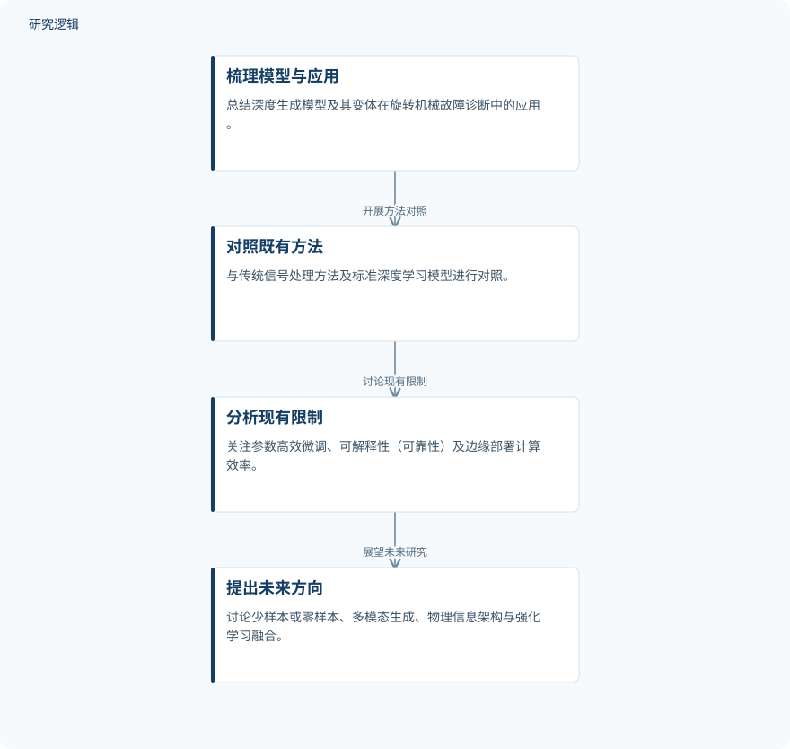

摘要解读
基于深度生成模型的旋转机械故障诊断技术综述
A Review of Fault Diagnosis Technology for Rotating Machinery Based on Deep Generative Models
解读更新 2026-11-10 10:06 · 依据公开摘要整理，未核验全文细节
旋转机械故障诊断常同时受到工况变化与小样本约束。深度生成模型能为这些难题提供哪些思路，又有哪些落地障碍？这篇综述的摘要提供了一条连接模型类别、诊断任务与部署约束的阅读线索。
文章目录
工况不稳定与数据稀缺的叠加难题
旋转机械的故障诊断不仅要面对非平稳运行条件，还常受到小样本数据限制。摘要指出，传统深度学习模型在应对这些问题时往往表现不够理想。本文关注的核心，是深度生成模型如何为这种复合困难提供新的解决思路。
摘要将生成模型的作用概括为合成高保真数据样本、重建潜在系统状态，以及建模复杂的多模态数据流。因此，这里的“生成”不只指补充训练数据，也涉及对系统状态与不同模态信息的表达。
以模型类别和应用任务组织综述
这是一篇综述，而非摘要中报告的新诊断模型实验。作者系统梳理了深度自回归模型、变分自编码器、生成对抗网络、扩散模型和大语言模型及其变体在旋转机械故障诊断中的应用，并将深度生成模型与传统信号处理方法、标准深度学习模型进行对照。
依据摘要整理的综述内容关系


概括摘要明确陈述的梳理、比较与展望关系，不代表实验流程，也不是论文原图。
下载 SVG图示关系说明
实线表示相邻阶段的信息流，虚线表示跨阶段联系或反馈。
深度生成模型及其变体 → 旋转机械诊断相关应用：系统梳理应用；深度生成模型及其变体 → 与传统方法对照：开展方法对照；深度生成模型及其变体 → 当前局限：分析当前局限；当前局限 → 未来研究方向：讨论未来方向
应用覆盖数据生成、跨域处理与诊断
摘要报告的应用范围包括数据生成、域适应与泛化、多模态数据融合，以及下游故障诊断和异常检测。这些内容呈现了生成模型参与诊断的不同位置，但摘要没有给出各类模型的性能排序，也未报告可直接比较的定量增益。
综述还将参数高效微调策略、可解释性（可靠性）和边缘部署的计算效率列为当前局限讨论的重点。少样本或零样本学习、稳健多模态数据生成、物理信息混合生成架构，以及强化学习与生成模型的结合，则属于作者提出的未来方向，不能视为已经验证的改进效果。
摘要不足以判断证据覆盖与比较强度
仅凭本次摘要，无法判断综述纳入了多少研究、涉及哪些设备与数据集，也无法确认样本规模、工况覆盖、比较基线及实际部署验证范围。摘要同样未交代文献检索和筛选细节。这些信息尚不可判断，不等于论文没有涉及；当前材料也不足以支持某类生成模型普遍优于其他方法的结论。
阅读启发：区分生成能力与诊断证据
阅读启发：对于智能运维，值得进一步阅读的问题是，文献如何把生成数据的质量与诊断可靠性联系起来，以及跨工况泛化、多模态融合和边缘计算约束分别如何评价。对于摘要纳入的大语言模型，也应关注其具体承担什么任务，而不是仅凭模型名称推断其诊断能力。
以上为本站阅读启发与建议，不是论文已验证的结论。